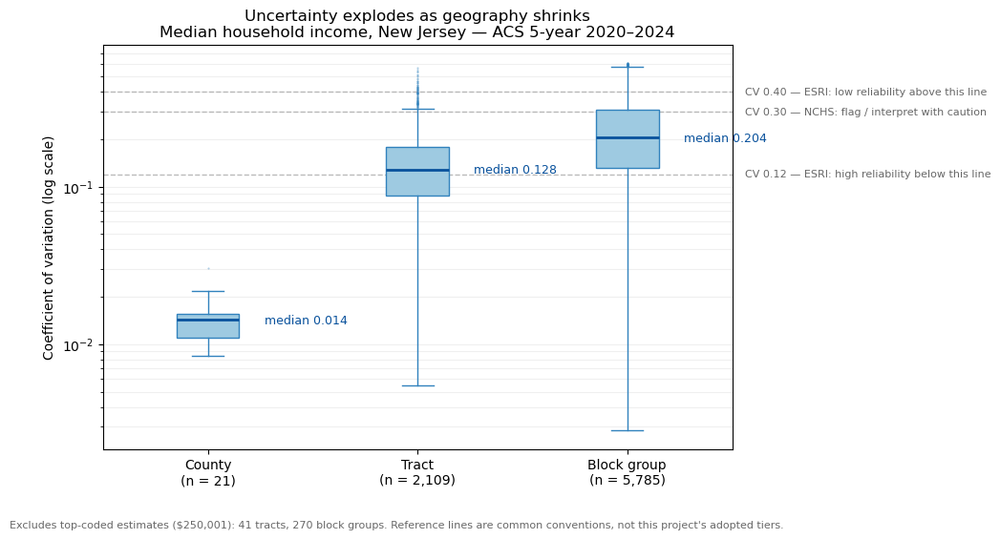
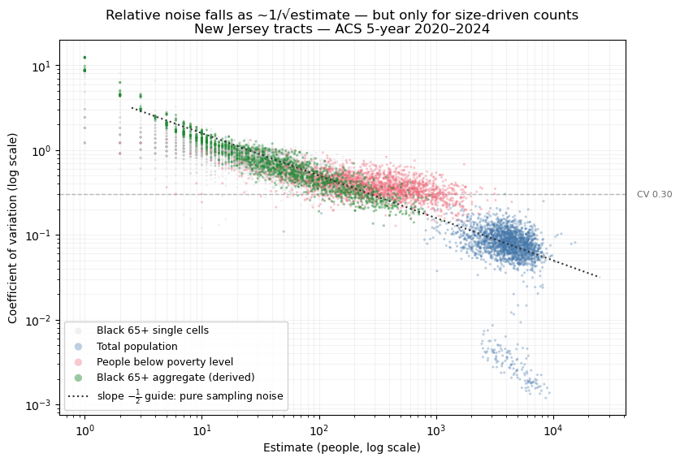
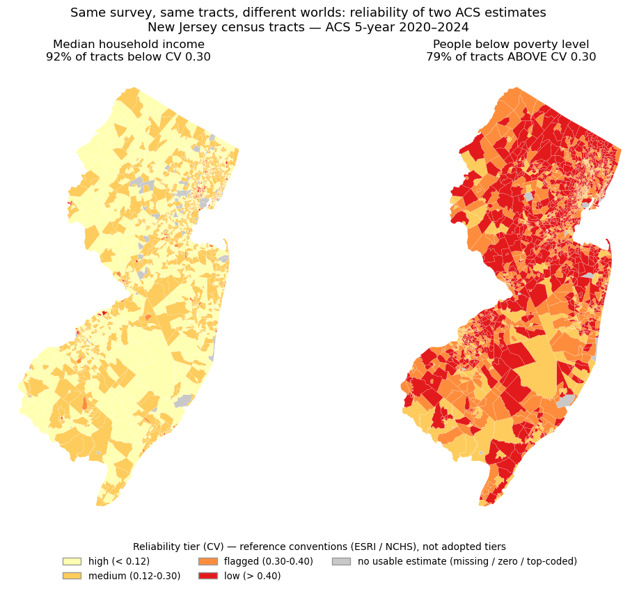
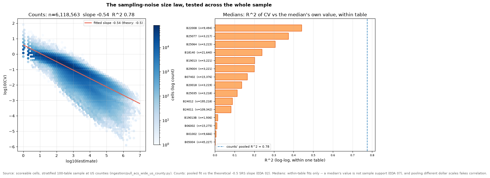
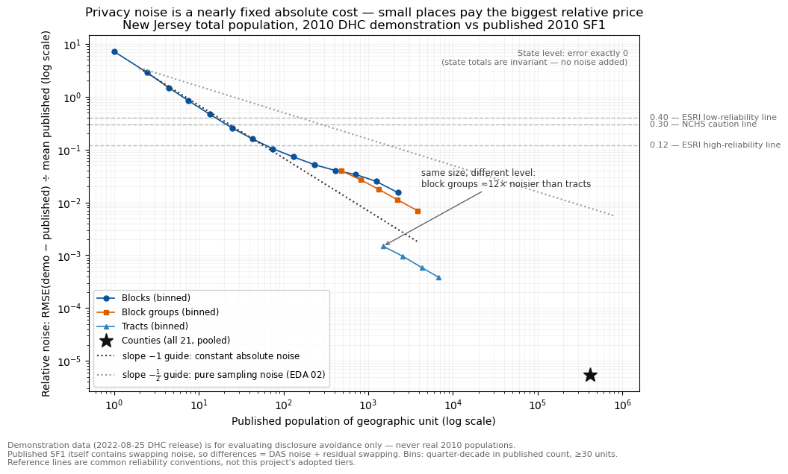
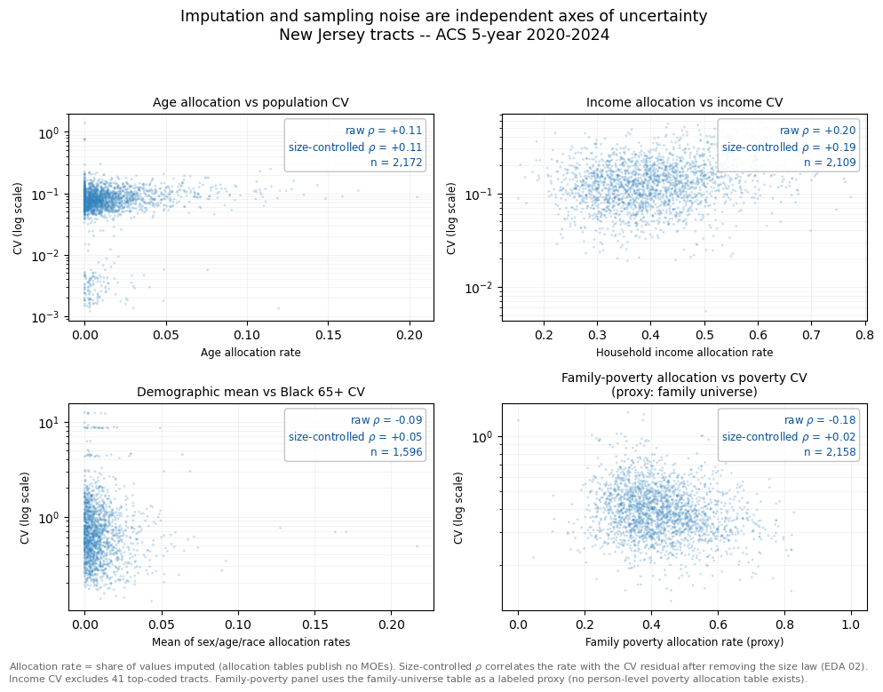
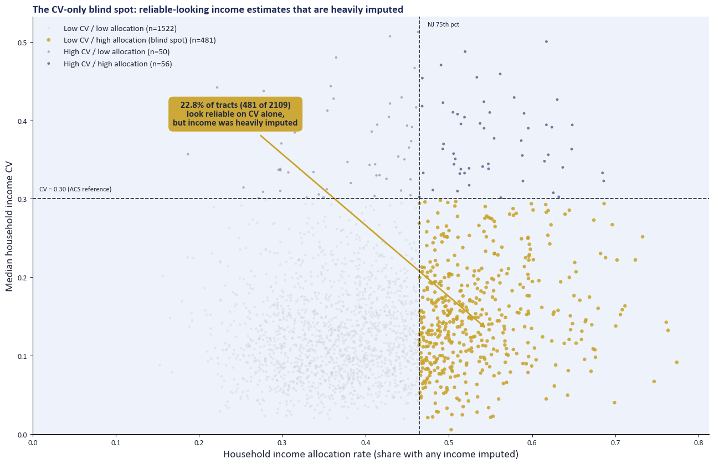
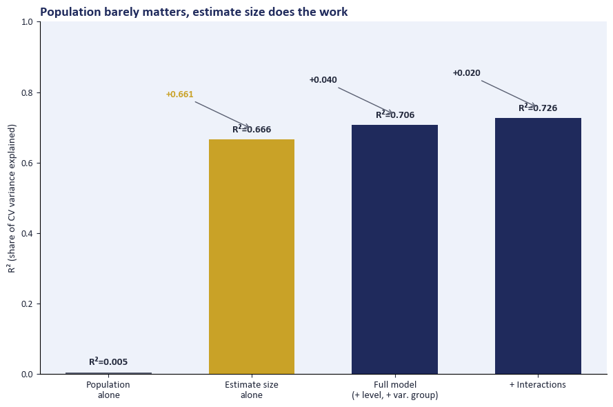
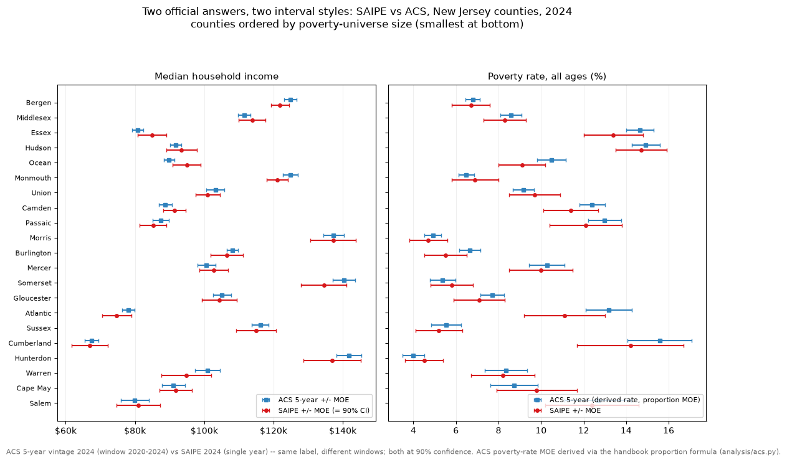
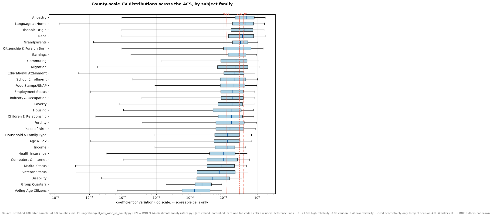

Project handover
The US County Demographic Explorer shows 26 American Community Survey (ACS) 2020–2024 5-year measures for every U.S. county, and puts the uncertainty the Census Bureau already publishes next to each number: the margin of error, the coefficient of variation, a 90% interval, and a reliability score that also reflects how much of the answer was imputed. Version 7 adds an optional "Ask about this county" assistant that words short answers from the county's own figures.
The one idea behind the project
"A tight margin of error is not the same thing as a trustworthy number."
Uncertainty in Census data is not one thing. It is at least three separate things, each following its own rules, and the error bar the Bureau publishes captures only one of them.
Sampling error
The ACS asks a sample, not everyone. Its margin of error grows predictably as the place or group gets smaller (roughly with 1/√N). This is the only kind the published error bar measures.
Privacy noise
The 2020 Census adds deliberate statistical noise to protect respondents (differential privacy). It behaves like a near-fixed cost per place, so it matters most in very small areas.
Imputation
When a household skips a question, the Bureau fills in a plausible answer. About 1 in 7 person-characteristics is imputed, income far more than age or sex, and the rate is independent of the margin of error.
What is in this handover branch
- The app:
Streamlit/app_US_v7.py(version 7), the only app on this branch. - The code it runs on:
analysis/(formulas, loaders, the reliability score, the assistant) andingestion/(the scripts that download every data file from the Census Bureau and USDA). - The research:
notebooks/(EDA 01–14) anddocs/(findings report, glossary, data dictionary, methodology notes, design specs). - The checks:
tests/andanalysis/test_*.py. - No data files. Every data file is downloaded fresh by the ingestion scripts (see Run it locally), so nothing in the repo goes stale or carries a license question. All of it is public.
This is a student capstone demonstration. It is not an official Census Bureau product. The repository is public, so it names no sponsor contacts.
Run it locally
About fifteen minutes from a fresh clone to a running dashboard, most of it the data download. You need git, Python 3.13 (the pinned package versions in requirements.txt were verified together on Python 3.13.5), and a free Census API key. Run every command from the repository root.
- Clone and install
git clone https://github.com/andrewswiniarski-hue/Census_Uncertainty_Analysis.git cd Census_Uncertainty_Analysis git checkout final-handoff python -m venv .venv .venv\Scripts\activate pip install -r requirements.txt -r requirements-dev.txtgit clone https://github.com/andrewswiniarski-hue/Census_Uncertainty_Analysis.git cd Census_Uncertainty_Analysis git checkout final-handoff python3 -m venv .venv source .venv/bin/activate pip install -r requirements.txt -r requirements-dev.txt - Add your Census API key
Request one at api.census.gov/data/key_signup.html; it arrives by email within minutes. Copy
.env.exampleto a new file named.envand replacepaste_your_key_herewith your key..envis git-ignored, so the key never leaves your machine. The key is required: the three Census pulls stop with a clear message without it.Copy-Item .env.example .env notepad .envcp .env.example .env open -e .env # or any text editor - Download the data (four scripts, in this order)
Each script prints its own sanity checks and writes to
data/raw/. Runpull_usdash.pyfirst:pull_rucc.pycross-checks its county list against that file. A script whose output already exists skips the download. On this branch's verification run the four took about 6 minutes (pull_usdash.py is about 5 of them) in total.python ingestion/pull_usdash.py python ingestion/pull_usdash_alloc.py python ingestion/pull_us_geometry.py python ingestion/pull_rucc.py - Start the dashboard
streamlit run Streamlit/app_US_v7.pyIt opens at
http://localhost:8501. Restart the server after changing.envor anything inanalysis/: Streamlit's Rerun button does not reload changed modules. - Optional: switch on the "Ask about this county" assistant
Add these lines to
.envand restart. Without a key the panel shows one line saying it is off, and the rest of the dashboard is unchanged.Variable Purpose Default ANTHROPIC_API_KEYA Claude API key (from console.anthropic.com). Never commit it. none: assistant off ASSISTANT_MODELModel name claude-haiku-5-5ASSISTANT_FREE_TEXT0hides the question box and keeps the three ready-made prompts1 - Run the tests
python -m pytest analysis tests -qOn this branch, with the data downloaded: 351 passed, 14 skipped (the skipped tests need New Jersey research data that the dashboard does not use). Tests that need the data files skip, rather than fail, when
data/raw/is empty. No test calls the Census API or the Anthropic API.
Tech stack
Everything is Python, open source, and runs on one laptop. There is no server, database or cloud service to provision: the data lives in local Parquet files and the dashboard is a Streamlit app served at localhost. The only outside services are the public Census and USDA download endpoints (used once, by the ingestion scripts) and, if switched on, the Anthropic API for the assistant.
api.census.govingestion/*.pyCENSUS_API_KEY from .env_common.pyRetry on flaky metadata lookups, official-label checks, sanity reportsdata/raw/*.parquet · pyarrowSeven files the app reads, about 18.5 MB, kept exactly as the API returned them (GeoParquet for the two boundary files)analysis/*.pydashboard.pyLoaders and one accessor per measure, with tests against the published labelsacs.py · common.py · alloc.pyCensus handbook formulas: CV, root-sum-of-squares margins, allocation ratescomposite.pyThe card reliability score and its bandsassistant.py · assistant_text.pyThe assistant's engine, checks and every sentence of its fixed wordingStreamlit/app_US_v7.py.streamlit/config.tomlanthropic + pydantic for a structured reply. Off without ANTHROPIC_API_KEYhttp://localhost:8501Read top to bottom: data moves down the stack once at download time and once when the app starts. The gold dashed box is the only optional piece.
What each library does
| Library | Role | Used by |
|---|---|---|
| streamlit | The dashboard UI: tabs, session state, cached data, fragments, chat input; AppTest for UI tests | app, tests |
| pydeck | Interactive state and county choropleth (GeoJsonLayer, click selection, tooltips) | app |
| pandas · numpy | Measure math, CV and margin-of-error formulas, rates, statistical peers | everything |
| geopandas · shapely | Reads the GeoParquet boundaries; shapely repairs geometry during ingestion | app, ingestion |
| pyarrow | Parquet read and write | everything |
| censusdis | Census Data API client for the data and boundary pulls | ingestion |
| requests | RUCC CSV download and official variable-label lookups | ingestion |
| topojson | Shared-border-aware simplification of county shapes | ingestion |
| python-dotenv | Loads the Census and Anthropic keys from .env | ingestion, assistant |
| anthropic · pydantic | Claude API client and the structured Reply schema the model must return | assistant (optional) |
| matplotlib · jupyter · openpyxl | Notebook charts, the notebooks themselves, reading DAS demonstration documentation | research only |
| pytest | The test suite | development |
How data gets into the app
The app never calls an API while you use it. Four scripts download seven files once; the app reads those files a single time when it starts and keeps them in memory (st.cache_resource), and every card, map, peer list and assistant answer is computed from that one copy.
Left to right: where each file comes from, the script that writes it, and what the app builds from it. Every file passes through the same loaders in analysis/dashboard.py, once, when the app starts.
The four scripts
| Script | Calls | Tables / content | Writes to data/raw/ | Key? |
|---|---|---|---|---|
pull_usdash.py | Census Data API acs/acs5 2024 at state and county; acs/acs1 2024 at county | 399 variables (estimate + margin pairs): B01001, B17001, B19013 plus B27001, B25064, B25071, B25003, C16002, B08201, B19001, C17002, B23025, B25070, B25077, B15003, B18101. The 1-year pull uses the anchor tables only; the counties it returns are the 1-year availability list. Drops Puerto Rico; partition and bound sanity checks. | acs5_2024_usdash_state, acs5_2024_usdash_county, acs1_2024_usdash_county | Yes |
pull_usdash_alloc.py | acs/acs5 2024, county, estimates only | Allocation (imputation) tables B98031, B98032, B99011, B99012, B99021, B99192, B99172. These publish no margins of error. Official labels printed from the API. | acs5_2024_usdash_alloc_county | Yes |
pull_us_geometry.py | Census cartographic boundaries (via censusdis, with_geometry=True) | State and county shapes, reprojected to EPSG:4326, simplified with topojson (0.0005°) so neighbors still share borders, repaired with shapely.make_valid | geo_2024_usdash_{state,county}_simple (read by the app) and full-resolution versions (not read) | Yes |
pull_rucc.py | ers.usda.gov RUCC 2023 CSV (plain download) | Rural-Urban Continuum Codes, pivoted long to wide, with a metro/nonmetro flag; territories dropped; county join checked against the ACS file | rucc_2023_county | No |
Shared mechanics live in ingestion/_common.py: load_api_key, download_with_retry (five attempts, doubling delay; the Census API drops one of censusdis's per-variable metadata lookups now and then), fetch_official_labels and sanity_report. pull_usdash.py reuses the anchor variable list from pull_trenton_dashboard.py, and pull_usdash_alloc.py reuses pull_acs_alloc_nj.py's table list, which is why those two NJ-era scripts stay in the repo.
Refreshing to a new ACS release
- Change the year in each pull script (
2024inpull_usdash.py's download calls and output names;VINTAGEinpull_usdash_alloc.pyandpull_us_geometry.py) and the file names the loaders read inanalysis/dashboard.py(US_LEVEL_SPECS,load_us_acs1_county,load_alloc_us_county). - Re-run the four pulls, read their sanity output, then run the tests. A new table cell number or a renamed label shows up as a failing accessor test in
analysis/test_dashboard.py, which checks cell numbers against the published labels. - Update the "2020–2024" wording in the app's footer and welcome page. If an AI key is in use, re-run
python analysis/assistant_eval.py --dry-run, then a live evaluation, before relying on its answers.
Things about the data that will surprise you
- Total population has no margin of error in 3,014 of 3,144 counties. The Bureau controls it to its own population estimates.
censusdisturns that "controlled" annotation into a blank, which looks like missing data; the app gives those counties their own map color and says "controlled", not "missing". - censusdis also turns "insufficient sample" into the same blank. Controlled (very reliable) and not publishable (unreliable) arrive identically; pull the
EA/MAannotation variables if the difference ever matters. - Median household income is top-coded at $250,001, and every top-coded row also has a blank margin. The card sets that margin aside rather than report a falsely precise CV.
- Allocation tables (B98/B99) publish no margins of error. Asking for a
_Mvariable errors the whole query. B98031/B98032 exist only at county level: tract rows come back, every value null. A query that returns rows has not necessarily returned values. - Published margins can be implausibly narrow in tiny counties. Loving County, Texas: median household income $51,250 ± $617 (CV 0.7%) from 27 households. The score takes published margins as given, so it scores this Higher. Not yet checked with the Bureau.
- 132 rural counties publish a real total-population margin where the other 3,090 carry the controlled annotation. Characterized, not explained.
- The 2024
acs/acs5variables.jsonlists none of the margin-of-error variables, even though every one of them can be queried. Never inventory uncertainty from that file alone.
The full list (about 40 items, including the NJ research data) is in HANDOFF.md under "Data landmines".
How this app works
From Census tables to the cards on County explorer. This section was a page inside the app ("How this app works", Justus Long); it now lives here so the app stays focused on the data. Its worked example and charts were generated from the same data and the same functions the dashboard uses, for Mercer County, New Jersey on the median household income card. Open a section below.
The three tabs
Welcome
Three starting steps, four goal cards (find a number, write a grant application, compare counties, check reliability), a plain explanation of margins of error and the CV color scale, a worked grant-writing example, and short FAQs (Katie Christiansen's design).
County explorer
Pick a state, then a county, on the map or in the search box. The map colors counties by the chosen measure's CV. Below it: the "Ask about this county" panel and the 26 cards, grouped by topic, each with its interval, CV, reliability strip and an optional "Compare to state" row.
Statistical peers
For one measure, every county whose estimate cannot be told apart from the selected county's at 90% confidence, on its own map and in a ranked table, with optional same-metro-class and same-size gates.
From Census files to a card
Every number on a County explorer card starts as a published Census figure. The app does not create a new estimate. It attaches the uncertainty the Census Bureau already published, then adds a reliability score and, on a separate tab, a peer list.
Census tables and RUCC
ACS 2020–2024 5-year county and state tables, allocation tables for income and family poverty, and USDA ERS Rural-Urban Continuum Codes for 2023. Downloaded by pull_usdash.py, pull_usdash_alloc.py, and pull_rucc.py.
Read at startup
County explorer loads those files a single time when the app starts, then every card and the peer tab read from that copy.
What the card shows
The published estimate, its margin of error, the CV, a 90% interval from zero, and — when the measure has them — a rate line and a reliability strip.
Margin of error (MOE). The half-width the Census Bureau publishes at 90% confidence. The interval drawn on a card is the estimate plus that margin and the estimate minus that margin.
See how one card is calculated
Mercer County, New Jersey, median household income card. In the app this section let you pick any state, county and card; here it is frozen at one example. Everything below was computed from the same Census files and the same functions the County explorer uses, so the numbers match that county's card.
- Read the published figure. B19013_001, the published median. Estimate $100,645, margin ±$2,565, straight from the table.
- Standard error. Margin ÷ 1.645 = $1,559 (1.645 is the 90% factor).
- CV. Standard error ÷ estimate = 0.015 (1.5%), which falls in Higher reliability on CV alone.
- Reliability score. Sampling sub-score 96.8 (from the CV) and imputation sub-score 73.3 (this county’s imputation rate ranked against every U.S. county) average to 85.
A county whose median is top-coded (250,001) has its margin set aside: the value is censored, so a CV from it would look falsely precise.
The interval behind the CV
The bar is the estimate plus and minus its margin of error, drawn from zero. The CV is the margin’s size relative to the estimate, scaled by 1.645, so a wide bar next to a small dot means a high CV.
Same card, other counties in New Jersey
This county ranks 14 of 21 in New Jersey on this card’s CV (1 = lowest). Nationally, 94% of counties are at or under CV 0.12 on this card and 0% are over 0.30.
Why a small number carries a larger CV
Each dot is a U.S. county on this card. Where the estimate is small, the same sampling noise is a bigger share of it, so CV climbs. Read a high CV in a small county as “fewer people or households behind this figure”.
Every card for Mercer County, New Jersey
Cards sorted by CV: which figure to trust more in this county, not which problem is worse. 1 card(s) have no CV here and are left out.
What goes into each card's CV
CV = (margin of error / 1.645) / estimate · 90% interval = estimate ± margin of error
Coefficient of variation (CV). The margin of error divided by 1.645 is the standard error. Dividing that by the estimate gives the CV. A lower CV means the margin is small relative to the number. The CV on the card, the map color, and the reliability score all use only the published estimate and its published margin of error.
A median, a percent, or a number of people
These cards publish the figure itself. The CV is that figure’s own margin of error, scaled by the formula above.
Number of people or households, plus a derived rate
For example uninsured people, or renter households paying 30% or more of income. The CV is the CV of that number. The percentage under it is a separate calculation with the Census Bureau’s proportion formula in proportion_rate, and it is not the CV.
Imputation is not part of the CV
Imputation (allocation). When a household skips a question, the Census Bureau fills the blank with a statistically plausible value. That share is a data-quality fact. It enters the reliability score on income and poverty cards, listed in the next section, and nowhere else.
All cards at a glance
| Card | Table | Built from | Rate line | Score uses |
|---|---|---|---|---|
| Total population | B01001 | Controlled estimate of people | — | No CV in most counties |
| Median household income | B19013 | Published median | — | Sampling + imputation |
| Median gross rent | B25064 | Published median | — | Sampling only |
| Rent burden (median rent as % of income) | B25071 | Published median | — | Sampling only |
| Median home value | B25077 | Published median | — | Sampling only |
| Population, age Under 5 | B01001 | Number of people: published cells summed | — | Sampling only |
| Population, age 5-17 | B01001 | Number of people: published cells summed | — | Sampling only |
| Population, age 18-64 | B01001 | Number of people: published cells summed | — | Sampling only |
| Population, age 65+ | B01001 | Number of people: published cells summed | — | Sampling only |
| In poverty, age Under 5 | B17001 | Number of people: published cells summed | Yes | Sampling + imputation |
| In poverty, age 5-17 | B17001 | Number of people: published cells summed | Yes | Sampling + imputation |
| In poverty, age 18-64 | B17001 | Number of people: published cells summed | Yes | Sampling + imputation |
| In poverty, age 65+ | B17001 | Number of people: published cells summed | Yes | Sampling + imputation |
| Low income (below 200% of poverty) | C17002 | Number of people: published cells summed | Yes | Sampling + imputation |
| Unemployed | B23025 | Number of people: one published cell | Yes | Sampling only |
| Cost-burdened renters (30%+ of income) | B25070 | Number of renter households: published cells summed | Yes | Sampling only |
| Severely cost-burdened renters (50%+ of income) | B25070 | Number of renter households: one published cell | Yes | Sampling only |
| No high school diploma (age 25+) | B15003 | Number of people: published cells summed | Yes | Sampling only |
| With a disability | B18101 | Number of people: published cells summed | Yes | Sampling only |
| Uninsured (all ages) | B27001 | Number of people: published cells summed | Yes | Sampling only |
| Limited English speaking households | C16002 | Number of households: published cells summed | Yes | Sampling only |
| Households with no vehicle | B08201 | Number of households: one published cell | Yes | Sampling only |
| Households earning Under $25k | B19001 | Number of households: published cells summed | Yes | Sampling + imputation |
| Households earning $25k-$50k | B19001 | Number of households: published cells summed | Yes | Sampling + imputation |
| Households earning $50k-$100k | B19001 | Number of households: published cells summed | Yes | Sampling + imputation |
| Households earning $100k+ | B19001 | Number of households: published cells summed | Yes | Sampling + imputation |
How the reliability score is calculated
The score is an equal-weight combination of sampling error and, for income and poverty, imputation. This is our method for reading those two facts together. It is not a Census Bureau product.
Sampling sub-score
The card’s CV is converted to a 0–100 score, linear between the anchors in the table below. Higher means a smaller CV.
Imputation sub-score
The county’s allocation rate is ranked against every U.S. county. 100 at or below the median rate, 50 at the 75th percentile, 0 for the most-imputed county. Other cards skip this input.
Equal weight, then round
The two sub-scores are averaged. A card with no imputation input keeps the sampling sub-score alone. The result is rounded half up to a whole number. That whole number is the score on the card.
The worse of two labels
One label comes from the score (75 or above, 50 or above, else lower). The other comes from the CV (at most 0.12, at most 0.30, else lower). The card shows the worse of the two.
| Card CV | Sampling sub-score | Why this line |
|---|---|---|
| 0 | 100 | No sampling error. |
| 0.12 | 75 | ESRI high-reliability line. |
| 0.30 | 50 | NCHS caution line. |
| About 0.61 | 0 | The margin of error is as large as the estimate. The 90% interval reaches zero. |
Which cards include imputation
- Household income, table B99192 — direct Median household income and the four income-bracket cards.
- Family poverty status, table B99172 — a proxy The poverty age-band cards and low income. The table describes family poverty status, not the card’s exact item, so the card marks it as a proxy.
- Every other card Sampling only. The strip says imputation is not part of that figure’s score. Age imputation is left out on purpose: the rate is too small for a national ranking to mean much.
Can I compare these CVs?
Whether two CVs can be set side by side depends on what is being compared. These are this app’s reading guide, not Census Bureau rules.
| Comparison | Fair? | Why | Use instead / watch for |
|---|---|---|---|
| Same card, different counties | Yes | Same table, same universe, same definition. The “Nth of N counties” line and the map color work this way. | Small counties tend to have higher CVs because fewer people or households sit behind the number. To compare the estimates themselves, use Statistical peers. |
| Different cards, same county | With care | The CV is a ratio, so it is on one scale. It says which number is pinned down better. It does not say which topic is more important or which is worse. | Cards differ in size of universe, in median versus number of people or households, in one cell versus summed cells, and in whether imputation enters the score. For a like-for-like summary, use the reliability band. |
| The card’s CV and its rate | Different numbers | The card CV is for the number of people or households. The rate uses the proportion formula, which includes the universe’s margin. Their precisions can differ. | Read the rate’s 90% interval for the percentage. The worked example above shows both for one county. |
| County CV and state CV | No | A state is estimated from far more sample than one county, so its CV runs lower by design. | Turn on “Compare to state” on a card. It tests whether the difference is statistically significant instead. |
Why does Total population often have no CV?
Census controls the population total to its own independent estimates. In about 96% of counties it publishes no margin of error, so there is no CV and no score. That is a controlled figure, not missing data.
Can a card be “Lower reliability” with a good CV?
Yes, on income and poverty cards. A CV of 0.10 gives a sampling sub-score of about 79. If the county’s imputation rate ranks among the highest in the country, the imputation sub-score is near 0 and the average is about 40, which is Lower. The band also cannot be better than the CV band, so the worse of the two always shows.
How statistical peers are calculated
A statistical peer is a county whose estimate cannot be told apart from the selected county’s at 90% confidence.
Every U.S. county
The list starts from the full county file. The explorer’s other filters do not apply here.
Same kind of place
Two switches can keep counties in the same metro or nonmetro class (RUCC 2023) and the same population-size bin. Those are the only gates.
Rate, or the published median
Cards with a universe are compared on the derived rate. Median income, median rent, rent burden, and median home value are compared on the published value. Total population and the age bands are not peer measures.
Tie, higher, or lower
Counties not significantly different from the selected one form the tie set. A missing estimate or margin of error is untestable, and is not called a tie.
Closest estimate first
Rank 1 is the tied county whose published estimate is closest. The same estimate shares a rank. Similarity scores that closeness.
The 90% test. Standard error equals the margin of error divided by 1.645. The counties differ when the absolute z-score is greater than 1.645. Two different counties are drawn from separate samples, so this is the test’s independent case. Comparing a county with its own state is a nested case, and that caveat does not apply to peers.
Similarity = 100 × (1 − |gap| / |selected estimate|), clipped to 0–100
100 means the published estimates match. The score falls as the gap grows relative to the selected county’s estimate. The “Listed counties” dropdown (10, 25, 50, 100, or All) limits the table and the peer map. The headline still counts the full tie set.
Worked similarity
The same expression the peer table uses. Rank would be 1 if no tied county is closer.
"Ask about this county": the AI assistant New in v7
A panel on the County explorer tab, directly under the county heading, where a large language model (Claude Haiku 5.5) writes short plain-language answers about the selected county. The model never types a number. It writes named blanks such as [[median_household_income.estimate]], and the app's code fills each one with the exact figure the card shows.
Only display strings of public statistics, the question and the standing instructions are sent to the model. Nothing is written to disk.
What the panel offers
- Three ready-made prompts "Give me a county brief", "How reliable are these figures?", "How does this county compare with similar counties?"
- A question box 400 characters at most; 20 questions per browser session; switching county starts a new conversation (the session cap carries over).
ASSISTANT_FREE_TEXT=0removes the box. - Scope The selected county's 26 measures only. Questions about change over time, policy, or anything the dashboard does not hold get a fixed redirect.
- Voice "Describe, plus cited outside rules": it states bands and what drives them, quotes other organizations' rules as theirs, and gives no verdict of its own (the sponsor's 2026-08-12 neutral-voice direction).
The outside rules it may quote
The comparison is always done in code; the model only chooses whether to include the sentence. These rules are why an assistant answer can mention a 0.40 line that the card's reliability score does not use:
| Rule | What it says | Status |
|---|---|---|
| ESRI | High reliability below CV 12%, medium from 12% to 40%, low above 40% | Quoted |
| NCHS | Flags an estimate whose CV is over 30% | Quoted |
| HUD | An ACS median is usable when its margin of error is under half the estimate | Switched off (HUD_RULE_VERIFIED = False) until checked against a HUD document |
How well it works
analysis/assistant_eval.py asks 41 fixed questions about each of five counties chosen by fixed rules (Jefferson County, AL; Loving County, TX; Alpine County, CA; Bristol Bay Borough, AK; Wyoming County, PA). First full run, 205 replies (2026-10-18): the scope decision (answer or redirect) was right in 183 (89%); 11 (5%) were blocked by the checks; 1 of 15 ready-made prompt replies was blocked; none were unavailable; about $0.09 for all 205. Wording fixes followed, so rerun before quoting these numbers. The checks prove every figure is real, not that every sentence about a figure is right: read a sample of answers after any change to the wording or the fact sheet.
Engine: analysis/assistant.py · all wording: analysis/assistant_text.py · design: assistant design spec · decision #20 in HANDOFF.md.
The county fact sheet New in v7
The assistant answers from a fact sheet that _county_fact_sheet builds for the selected county. It calls the same functions the cards call, so the assistant and the cards cannot disagree about a figure.
Per measure
estimate, margin of error, 90% range, CV, rate and its range · reliability score, sampling and imputation sub-scores, band, whether the CV capped the band · share imputed (income) · CV rank in the state · state value or state-rate benchmark and the county-vs-state test · ACS 1-year estimate (income, population) · similar-county counts (pool, tested, tied, higher, lower) and up to five tied examples · which outside rules apply
Per county
name, state, metro class, population-size group, population, and the overall, sex, age and race imputed shares
Each measure also carries a status, so the assistant can say why a figure is missing instead of guessing: published, top_coded, suppressed, controlled, no_moe, or not_in_local_data.
Research findings
The research ran on New Jersey first (counties, tracts and block groups; Trenton and Mercer County as the pilot), then on every U.S. county. The plain-language record is docs/phase1-findings-report.md; every chart below comes from a committed notebook and can be regenerated by re-running it.
Sampling error: size and subject drive it








Privacy noise and imputation: invisible to the error bar








Two styles of published uncertainty, and the whole ACS




Every notebook, in one line
| # | Notebook | Headline |
|---|---|---|
| 01 | CV by geography size | Income CV grows 14× from county (0.014) to block group (0.204); tract poverty is above CV 0.30 in 80% of NJ tracts |
| 02 | CV by variable type | Counts follow 1/√N; poverty does not; summing 65+ cells moves the median CV from 0.886 to 0.631 |
| 03 | CV choropleth, NJ tracts | Poverty CV is worst in the least-poor tracts; 92% of tracts have income CV below 0.30 |
| 04 | Privacy noise, DAS demonstration | Slope −0.78 to −0.90; the block-group anomaly; 807 empty blocks gain 4,695 phantom residents, 427 lose everyone |
| 05 | Allocation rates vs CV | Income ~39% imputed vs under 1% for demographics, independent of CV once size is controlled |
| 06 | Composite reliability and CV drivers | 22.8% blind spot; place population R² 0.005 vs estimate size 0.67–0.73 |
| 08 | Allocation-denominator sensitivity | 12 of 28 definition pairs reverse the ranking of income sources: never quote a bare allocation rate |
| 09 | Who gets inferred, NJ PUMS | Whole-record substitution roughly halves up the age and education ladders (18.4% → 9.4%); sex is flat |
| 10 | 2020 DHC/DP1 modeled noise by size | Modeled DHC noise rises from about 0 to a median of 0.14 at block; DP1 total population equals DHC exactly |
| 10 | SAIPE vs ACS, NJ counties | SAIPE's interval is about 2× the ACS width in 99–100% of county-years |
| 11 | DHC/DP1 by variable type | Black 65+ modeled noise is about 1,200× population's at county, about 5× at block |
| 12 | DHC choropleth | Modeled DHC noise is an inverted population map (Spearman < −0.95), a limit of a size-only model |
| 13 | SAIPE vs ACS, Mercer County | Median income: ACS $100,645 ± $2,565 vs SAIPE $102,760 [98,661–106,859], two different kinds of uncertainty |
| 14 | ACS-wide error-bar survey | ~72% scoreable; family CVs differ 36×; the size law holds (−0.54, R² 0.78, 6.1M cells) |
Two notebooks share the number 10 (the DHC work was renumbered during a branch merge); a renumbering pass was deliberately not done because the docs link to these names. The notebooks run on the New Jersey pulls (pull_acs_nj.py, pull_nj_geometry.py, pull_das_demo_nj.py, pull_sf1_2010_nj.py, pull_acs_alloc_nj.py, and others named at the top of each notebook), not the dashboard pulls.
Who needs this, and for what
Garrett Spangler's user research (docs/user-segments-and-needs.md) ranked eleven user segments; the first tier is program staff (CDBG, HUD, ARC), small and rural county officials, and state data centers. About 74% of U.S. counties get 5-year estimates only. "The data stops at county. The functions do not have to." Four needs cover every segment:
Is this number solid enough to use?
The card's CV, interval and reliability band.
Is this difference real?
"Compare to state" and the Statistical peers tab, both 90% tests.
What did my own arithmetic do to the error?
Summed cells and rates use the Census handbook formulas; shown step by step in How this app works.
Where does this stop working?
Controlled, suppressed and top-coded figures say so on the card instead of showing a number.
The same research found that state data centers disagree on which CV lines to use (12/40, 15, 15/30), one reason the card names its sources (ESRI 0.12, NCHS 0.30) rather than claiming a standard.
Imputation is not one number
Garrett's allocation work (denominator sensitivity, NJ PUMS profile): across eight defensible denominators, 12 of 28 definition pairs reverse which income source is imputed most, and 98.2% of public-assistance allocations impute a zero. Hence the rule the dashboard follows: never quote a bare allocation rate; rank a county against all others on one fixed definition instead.
Methodology choices, and why
The project lead's numbered decisions, in short. Full wording, dates and history are in HANDOFF.md under "Decisions already made". Decisions #15 and #16 (scoring 2020 DHC and DP1) were superseded by #14 and are left out.
| # | Choice | Why |
|---|---|---|
| 1 | ACS 2020–2024 5-year (vintage 2024) | Newest release; the only ACS product published for every county |
| 2 | Tract is the floor for poverty and subgroup analysis | B17001 and detailed race-by-age tables are not published below tract |
| 3 | data/raw/ stays exactly as the API returned it | Every cleaning step is in code, so it can be reviewed and rerun |
| 4 | CV = (MOE / 1.645) / estimate | The ACS "Accuracy of the Data" definition; 1.645 converts a 90% margin to a standard error |
| 5 | A zero or missing estimate has no CV, reported separately | Never treated as "infinitely unreliable" |
| 6 | Top-coded income ($250,001) is flagged and excluded from CVs | A censored value with a blank margin would look falsely precise |
| 7 | Summed-cell margins: root-sum-of-squares with the handbook zero-cell rule | ACS handbook chapter 8 |
| 8 | CV lines 0.12 / 0.30 / 0.40 cited descriptively, as ESRI's and NCHS's | No Bureau-adopted threshold exists; the tool names whose line it is |
| 9 | Privacy-noise study uses the 2022-08-25 DAS demonstration release | Newest tabulated release, closest to production settings (provisional) |
| 10 | Privacy noise measured as binned relative RMSE | The CV analog for noise that averages to zero |
| 11 | Poverty imputation uses family table B99172 as a labeled proxy; size-controlled Spearman for independence | No person-level poverty allocation table exists; raw correlations are confounded by size |
| 12 | Two-axis CV × imputation matrix as the research view; weights not locked | Equal-weight and worst-component scores agreed on only 85% of the riskiest quartile |
| 13‑14 | Narrow to income and poverty, product-first | Mentor guidance after the first biweekly: build around a finding, not the whole catalog |
| 17 | Imputation shown beside the CV, never folded into it | They are independent (EDA 05), so one number would hide one of them |
| 18 | Dashboard covers every U.S. county and 26 program-tied measures | Each added measure is tied to a named federal program or index (CDBG, HUD CHAS, LIHTC, SVI, EJScreen, ARC) |
| 19 | Card reliability score: equal-weight sampling + imputation, bands never better than the CV's | Readable in one glance; the CV guard stops a good imputation rank from hiding a wide margin (it would otherwise lift 15.4% of scored figures) |
| 20 | Optional AI assistant that never types a number | Plain-language help (research question Q4) without a single figure the code did not supply |
Limits and open questions
Known limits of the dashboard
- County level only. The dashboard holds no tract or block-group data, and the reliability score is our methodology, pending Bureau review.
- Published margins are taken as given, including implausibly narrow ones in very small counties (Loving County, Texas).
- The state-rate benchmark on count cards treats the state rate and the county's universe as independent, which slightly overstates its margin because the county is part of the state.
- Only total population is treated as a controlled estimate, because that convention has been verified only for it.
- The assistant's checks guarantee every figure is real, not every sentence. Live answers have, for example, put a rate next to a count's range. A human read of answers is needed after any change.
- Open lead decisions carried from v6: the peer table's "Similarity" score (our invention), the blue-and-gold palette, and em dashes in user-facing text.
Questions for the Census Bureau
The full list, with context, is under "Open Questions for Mentors" in README.md. The ones that most affect the dashboard:
- CV threshold convention. State data centers disagree (12/40, 15, 15/30). Is there a Bureau-preferred convention, or is naming and citing our choice (ESRI 0.12, NCHS 0.30) sufficient?
- The reliability score. Are the sampling anchors, the relative imputation scale (national percentile within each allocation table) and the CV guard the right choices?
- AI-worded answers under the Census Bureau's name. Is an optional panel like "Ask about this county" acceptable, and is there Bureau guidance on generative AI to follow?
- Quoting outside rules. Does quoting ESRI's and NCHS's rules stay within the neutral-voice direction, or should the tool describe only its own bands?
- Scope. Do the 26 program-tied measures fit what the Bureau wants the tool to demonstrate, and should minority status (B03002), held back as sensitive, be included?
- A CV prediction below the published floor. Is a clearly labeled, count-only "expected CV for an estimate this size" acceptable to publish, or does it cross a line?
- Unexplained patterns. 132 rural counties publish a real total-population margin; the 2010 demonstration data shows block groups with ~9× tract-level privacy noise. Are the mechanisms known?
Where to find things
Links open the file in this repository. Every folder has its own README.
| Path | What it is | Start with |
|---|---|---|
Streamlit/ | The dashboard: app_US_v7.py and its README (measures, how to add one, known limits, the assistant's evaluation) | Streamlit/README.md |
.streamlit/config.toml | The app's theme (Roboto, Census palette) and two runner settings | |
analysis/ | Reusable modules: acs.py (CV, margins), dashboard.py (loaders, measure accessors), composite.py (reliability score), alloc*.py (imputation), cv_model.py, dhc.py, noise_model.py, replicate.py (PUMS standard errors), assistant*.py; plus their test_*.py | analysis/README.md |
ingestion/ | One script per data pull, each sanity-checked. The dashboard needs four (see How data gets in); the rest feed the notebooks | ingestion/README.md |
notebooks/ | EDA 01–14, committed with outputs | notebooks/README.md |
docs/ | Findings report, glossary, data dictionary, uncertainty sources, product shortlist, user research, allocation studies, API receipts, design specs, and the figures used here | docs/README.md |
tests/ | pytest suite: dashboard smoke tests, the assistant, the reliability score, ingestion helpers | python -m pytest analysis tests -q |
data/ | Empty in git; filled by the ingestion scripts (raw/) and notebooks (processed/) | data/README.md |
README.md | Project brief: research questions, deliverables, scope history, open questions for mentors | |
HANDOFF.md | Technical appendix: the 20 decisions, about 40 data landmines, environment notes | |
WORKLOG.md | Who did what, when, and what they found: the project's audit trail | |
verify_api_surfaces.py · report_alloc_*.py | Regenerate the API-receipt and allocation documents in docs/ | |
.env.example · requirements*.txt | Settings template and pinned dependencies | Run it locally |
Key documents
- Phase 1 findings report — the research in plain language (EDA 01–05, bridges through EDA 13)
- Uncertainty sources — which product carries which kind of uncertainty, and what is published about it
- Data dictionary — every product used: geographies, uncertainty shipped, cadence, access, landmines
- Glossary — every term, defined in plain English first
- Dashboard variable shortlist — why each measure is on the dashboard, and which were held back
- Reliability score design · AI assistant design · Population data-quality card design
Not on this branch, but in git history: earlier dashboard versions (Streamlit/app.py Trenton prototype and v1.1–v3 on main; v6 on the county-ai-assistant and JL_Work_Tree branches), and on main: the Product Scope Tracker (tools/, product_report.html), the meeting slide decks, and the team's AI-assistant working files.
Glossary
The terms this page uses most. The full glossary, with sources, is docs/glossary.md.